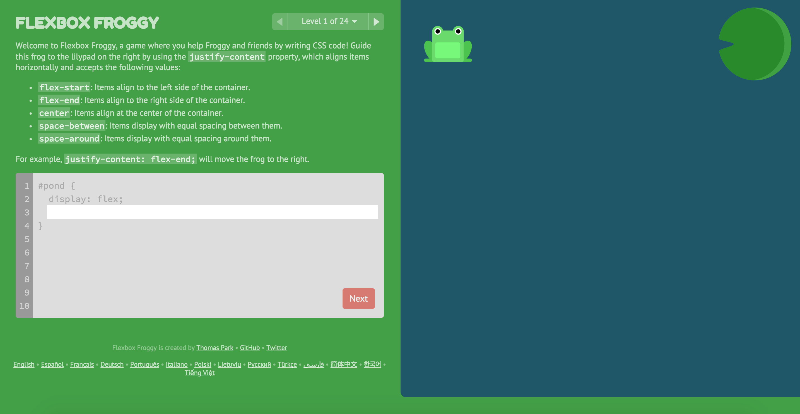
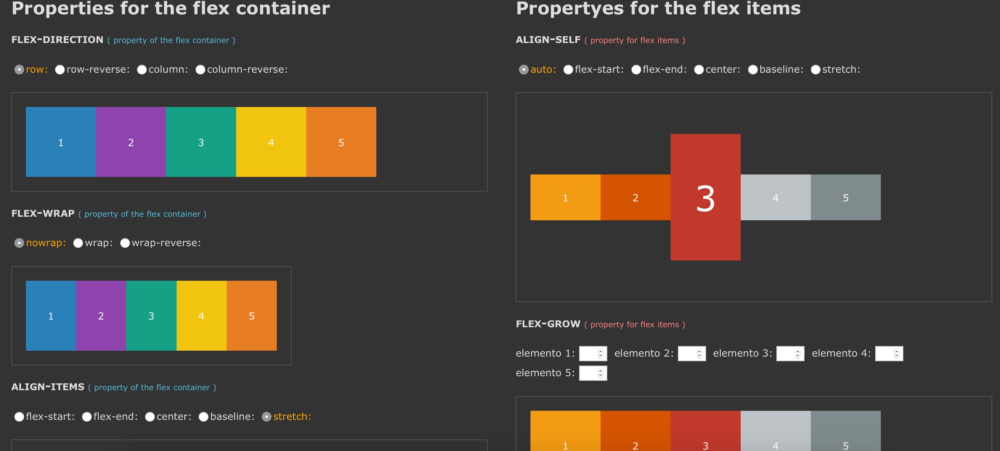

class: center, middle, slide-title-background # Demystifying Flexbox ??? Notes for the _first_ slide! --- class: slide-content # Brief Intro - Most funniest thing ever done --- class: slide-content # Agenda - Not an introduction talk - Going through some weirdness of Flexbox - When to use Flexbox --- class: slide-content-intro # Lotsa resources on Flexbox specs - <a href="https://css-tricks.com/snippets/css/a-guide-to-flexbox/" target="_blank">Flexbox complete guide on CSS Tricks</a> - <a href="https://www.youtube.com/watch?v=Vj7NZ6FiQvo&list=PLu8EoSxDXHP7xj_y6NIAhy0wuCd4uVdid" target="_blank">Flexbox youtube series by Wes Bos</a> --- class: center, middle, slide-content-intro # Flexbox Froggy <a href="http://flexboxfroggy.com/" target="_blank">http://flexboxfroggy.com/</a>  ??? Game that make you an flexbox grammar expert --- class: center, middle, slide-content-intro # Codepen flexbox playground [http://codepen.io/enxaneta/full/adLPwv/](http://codepen.io/enxaneta/full/adLPwv/)  ??? Discuss that it has --- class: center, middle, slide-content-mystery # Some mind boggling things Expect to do what it *supposed* to but it doesn't... --- class: slide-content-mystery # Example: Sticky footer <a href="https://philipwalton.github.io/solved-by-flexbox/demos/sticky-footer/">Solved by Flexbox</a> by Philip Walton ```css .Site { display: flex; min-height: 100vh; flex-direction: column; } .Site-content { flex: 1; } ``` <a href="https://github.com/philipwalton/solved-by-flexbox/blob/master/assets/css/components/site.css">Actual code</a> --- class: slide-content-mystery # flex shorthand or longhand? <blockquote>Authors are encouraged to control flexibility using the flex shorthand rather than with its longhand properties directly, as the shorthand correctly resets any unspecified components to accommodate common uses.</blockquote> <a href="https://www.w3.org/TR/css-flexbox-1/#flex-common">flexbox spec</a> ## Use shorthand --- class: center, middle, slide-content-mystery ## `flex: 0 1 auto;` ? `flex: flex-grow flex-shrink flex-basis` Auto fit the container depending on content with space if there is an extra space --- class: center, slide-content-mystery # auto margins Use auto margins to align items on the main axis <br><br> aligns items using that if `justify-content` is not specify --- class: center, slide-content-mystery ### What we try to use Flexbox for <br><br><br> ## All Layouts <br><br><br> <div class="slide-body-text"> <s>to replace all float: left / position: relative</s> </div> --- class: center, slide-content-mystery # Don't... do that <div class="slide-body-text"> Content determines container size rather than container determines content <br><br><br> <blockquote>Don't use flexbox for page layout</blockquote> <a href="https://jakearchibald.com/2014/dont-use-flexbox-for-page-layout/">by Jake Archibald</a> </div> --- class: slide-content-mystery # Good cases ### Small components - Vertical centering - Responsive horizontals e.g. lists, navigation headers - Grid of items <s>not grid layout</s> --- class: slide-content-mystery # Not so good cases ### Sticky footer - Use it if supporting evergreen browsers --- class: center, middle, slide-content-demo # Vertical centering [http://codepen.io/hongkheng/pen/obdWrY](http://codepen.io/hongkheng/pen/obdWrY) --- class: center, middle, slide-content-demo # Responsive horizontals [http://codepen.io/hongkheng/pen/RryLzZ](http://codepen.io/hongkheng/pen/RryLzZ) --- class: center, middle, slide-content-demo # Grid of items + Vertical centering [http://codepen.io/hongkheng/pen/wMjKWQ](http://codepen.io/hongkheng/pen/wMjKWQ) --- class: center, middle, slide-content-end # Questions?